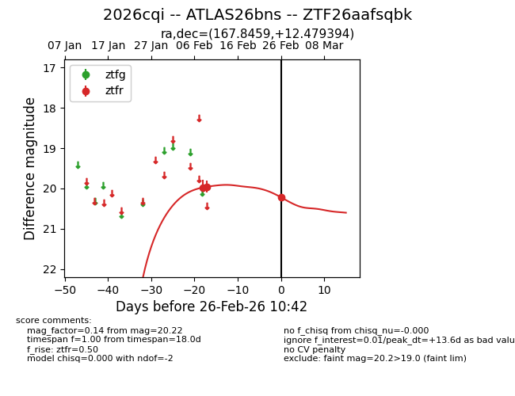
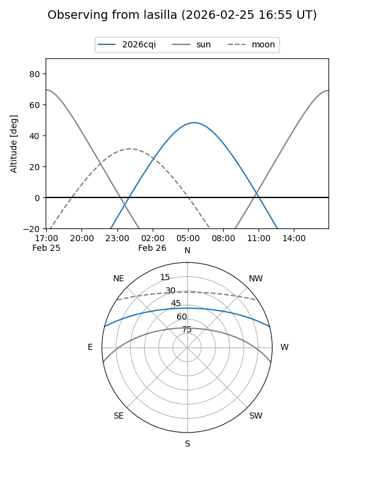
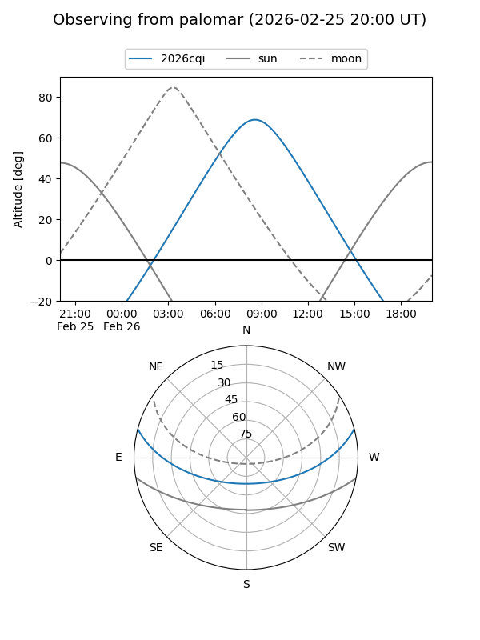
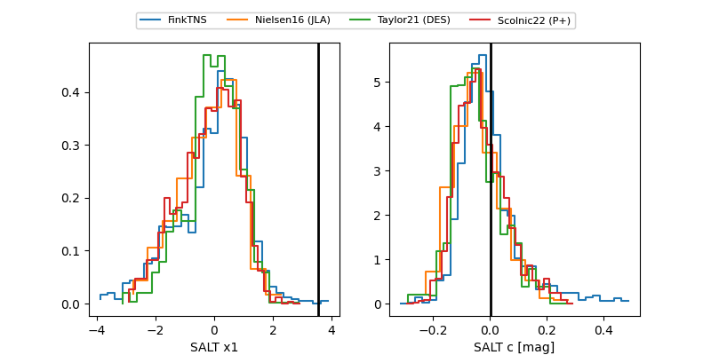

2026cqi
Target 2026cqi at 2026-02-26 10:43
Aliases and brokers:
FINK: link
Lasair: link
ALeRCE: link
TNS: link
YSE: link
alt names
ZTF26aafsqbk (ztf,fink_ztf)
2026cqi (tns,yse)
ATLAS26bns (atlas)
Coordinates:
equatorial (ra, dec) = 167.8459,+12.47939
equatorial (HMS+DMS) = 11:11:23.02,+12:28:45.82
galactic (l, b) = (240.0182,+62.37386)
Flags:
Photometry:
last ztfr=20.22
3 ztfr detections
Lightcurve

Visibility


Additional plots
